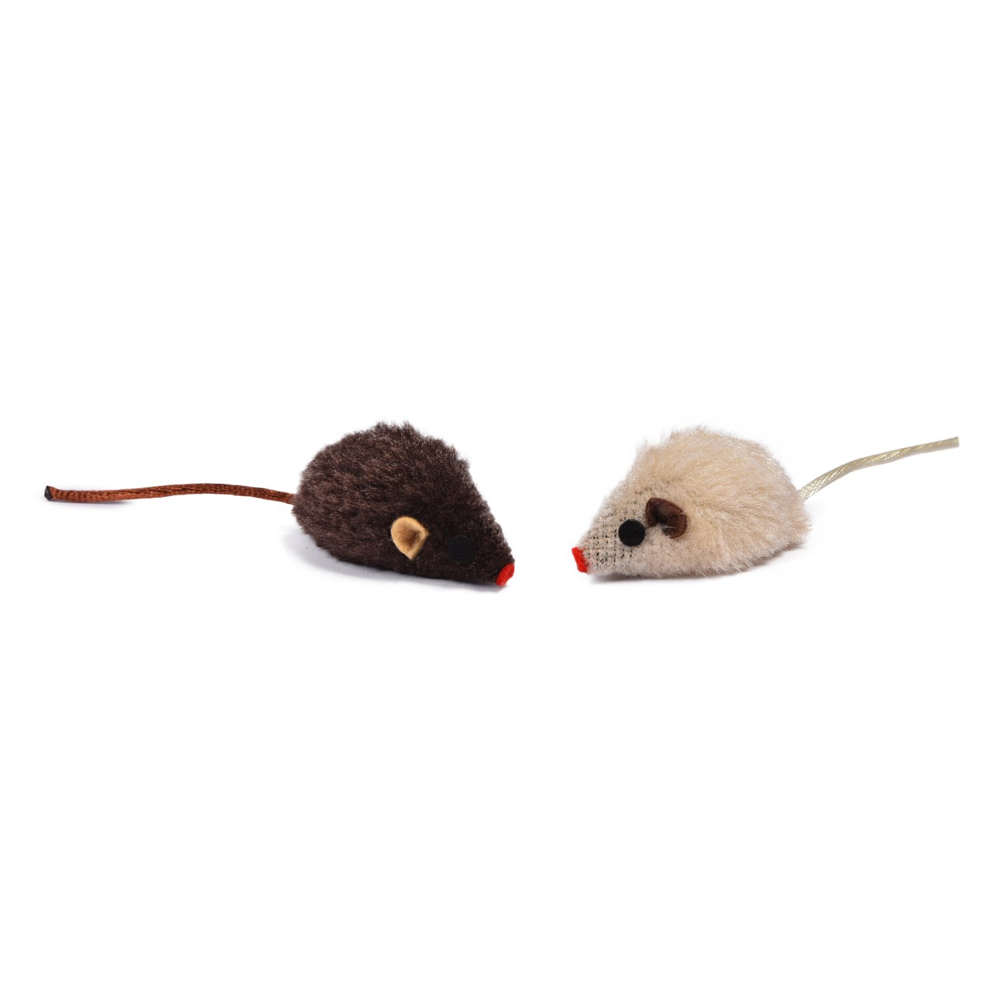
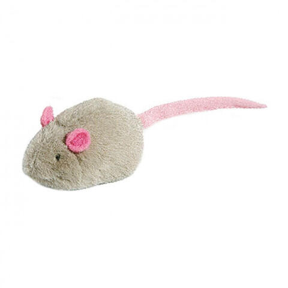

Мышка для котиков

Краткое описание товара
Классная мышка для вашей кошки
Характеристики товара
- Страна производства: Китай;
- Размеры: 10 см x2.5см x 2.5см;
- Цвет: белый, серый;
- Материал: натуральный мех.
- Материал: натуральный мех.
- Материал: натуральный мех.
- Материал: натуральный мех.
- Материал: натуральный мех.

Длина хвоста
Размер ушек
Качество шуршания
10 см
2см х1см
Прекрасное
Подробное описание товара
- Игрушка для всех пород котов или кошек;
- Разноцветные мышки изготовлены из натурального меха и прочных материалов;
- Они не вредят зубам и ротовой полости;
- В наборе одна игрушка размером 5 см;
- Игры оказывают успокаивающее влияние на гиперактивных питомцев и добавляют бодрости флегматичным;
- Активные игры укрепят мускулатуру, здоровье и улучшат настроение животного.